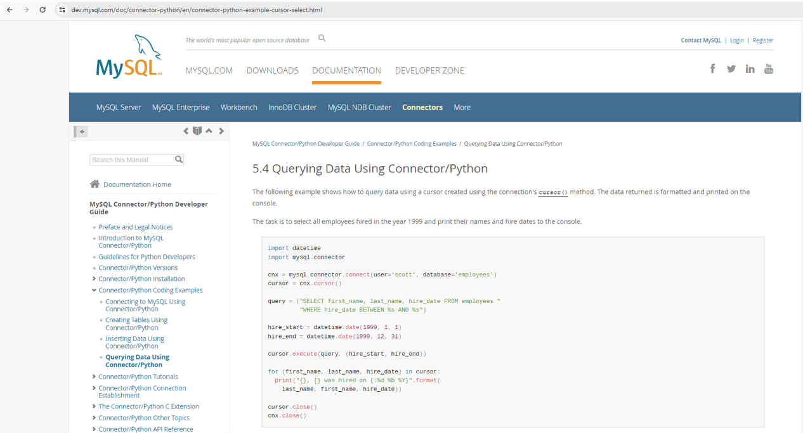

5.1.4. Data Acquisition#
Time to talk about how we go about getting our hands on real data. There are numerous different ways can source real data, with some requiring specialized infrastructures and environments, and others are better for quickly building prototypes, or for learning and testing purposes.
In a production data science team, there will likely be a preference for working within the confines of a reproducible, scalable, and sustainable architecture, which includes the data acquisition pipelines. Of course we still find value in quickly getting our hands on an Excel file, reading it in to a tool like KNIME, and building a simple prediction model. There’s a time and place for both ways of working.
The Citizen Data Scientist will likely favor and gravitate towards the simple points of access, due to needing additional specialized skills to begin working with complex and industrial data warehousing and retrieval systems. The good news is since our focus is these front line analytical resources within a business unit, these associates are already comfortable working with their data in some way. This may be a syndicated aggregator like Nielsen, data provider like Circana, or maybe a data warehouse like SAP. All of which allow associates to pull data directly from a user friendly front end and export to Excel.
In this section we’ll cover just a few of the most popular methods for the acquisition of data for the beginner, as well as advanced practitioner. All of these options are accessible via numerous coding languages like python and SQL, but also using low/no code applications such as KNIME. What works for you will be dependent upon your situation, resources, tool preferences, and end goals.
We’ll cover the description of the following methods in this section, but not go into the practical usage here since we’ll go into hands on details in the labs.
Downloading files
Database/Warehouse
APIs
Downloading Files
By far the most common way you’ll get data as a citizen data scientist is by simply downloading a file. There are tons of different file extensions you will run into in the wild so there’s no hope we could be exhaustive here, but we can review a couple of the most common ones which should cover you for the majority of use cases.
In practice, you’ll occasionally run into new extensions you’ve never worked with before, and even errors with the most basic ingestion methods like reading in an Excel file due to encoding or formatting issues in the file. Google will always be your best friends when you run into errors or new file types regardless of whether your’re coding on working in an off the shelf tool. You can generally bet that someone else has run into the same problem you’re having and that the Q&A is out on the internet somewhere.
In this section we discuss downloading into flat files of some sort like CSV, Excel, and Text files.
Off we go!
CSV/Excel/TXT Files
Businesses run on Excel. I can’t say this enough. It is the most common data storage and analytics tool for a reason. It simply works and is super intuitive. Excel puts very sophisticated tools in the hands of non-technical resources, and it’s the lowest and cheapest bar to entry for analytics. Most companies will use it for these reasons, so skills are transferable from company to company and there’s no lock out due to prohibitive commercial licensing.
This is an extremely simple way to get working quickly as you’ll soon learn. The tradeoff is that you’re building a one-off solution, which may or may not be a problem, but you should be aware that it’s at the complete other end of the spectrum versus a scalable production solution.
Here we’re pointing to our Github repository with python, but you’ll likely be working most often with your local files on your computer, so you’ll just point your import wizard to the URL path wherever your file is stored. Simple as that.
| sex | weight | height | reported_weight | reported_height | |
|---|---|---|---|---|---|
| 0 | M | 77 | 182 | 77 | 180 |
| 1 | F | 58 | 161 | 51 | 159 |
| 2 | F | 53 | 161 | 54 | 158 |
| 3 | M | 68 | 177 | 70 | 175 |
| 4 | F | 59 | 157 | 59 | 155 |
| 5 | M | 76 | 170 | 76 | 165 |
| 6 | M | 76 | 167 | 77 | 165 |
| 7 | M | 69 | 186 | 73 | 180 |
| 8 | M | 71 | 178 | 71 | 175 |
| 9 | M | 65 | 171 | 64 | 170 |
There are a ton of arguments you should be aware of when dealing with CSV, Excel, and Text files, so definitely read any documentation and do some Googling when you run into any difficulties. For example, let’s see what happens if we read in our file as a “tab-delimited” text file instead of the default “comma-delimited”. Since we’re using python, this requires us to explicitly call out how we want to split our data using the separator argument sep = "\t" in pd.read_csv() call.
import pandas as pd
# Read in Davis height/weight data from Github at "tab-delimited"
url = 'https://github.com/bradybr/practical-data-science-and-ml/blob/main/datasets/Davis.csv?raw=true'
dat = pd.read_csv(url, sep = "\t")
dat.head(10)
| sex,weight,height,reported_weight,reported_height | |
|---|---|
| 0 | M,77,182,77,180 |
| 1 | F,58,161,51,159 |
| 2 | F,53,161,54,158 |
| 3 | M,68,177,70,175 |
| 4 | F,59,157,59,155 |
| 5 | M,76,170,76,165 |
| 6 | M,76,167,77,165 |
| 7 | M,69,186,73,180 |
| 8 | M,71,178,71,175 |
| 9 | M,65,171,64,170 |
Interesting. Notice the difference between this table and the first one above. The first table was properly parsed out into separate columns. In the second one, everything is contained in just one column, but we can clearly see there’s individual data separated by commas. Can you see why? It’s because we used a different “delimiter” (tab instead of comma), which turned out to not be what was actually separating the data fields.
It looks like we do need to understand if our file is comma, tab, semicolon, or otherwise separated. If our file was semicolon delimited, we would have written sep = ";", but as we can see, this one matched the default with comma separated so it was able to parse it out into a dataframe as-is.
If you have a true .xls file instead of a .csv file, then check out pd.read_excel() function, which handles the specialities which come with the more complex file type. The main issues you’ll have to deal with are any custom formatted cells and multiple sheets within one file. It’s definitely best to keep any flat files as simple as possible if you plan to read them into any analytical tool. Ignore this advice at your own peril.
XML/HTML Tables
Reading data from the internet can often be very finicky and challenging. Technology often gets involved, and you also need to know a little bit about the language of the internet: HTML.
The most painful part is that a method which worked yesterday can easily break tomorrow. Sites can change their code anytime so you always have to stay on your toes. It’s also a burden on the sites resources you’re trying to reach so it’s quite common to have your IP address blocked if you abuse requesting information too often. Specific types of sites are more sensitive to this than others, specifically ones that believe their data is a competitive advantage or proprietary in some way. There are constant legal battles going on regarding whether or not the data belongs in the public domain after it’s been published.
To illustrate how this works, we’ll read in a standing table from Wikipedia that shouldn’t give us any trouble. The output below is from a python query for a specific Wikipedia page listing all of the public companies currently listed in the S&P500.
| Symbol | Security | GICS Sector | GICS Sub-Industry | Headquarters Location | Date added | CIK | Founded | |
|---|---|---|---|---|---|---|---|---|
| 0 | MMM | 3M | Industrials | Industrial Conglomerates | Saint Paul, Minnesota | 1957-03-04 | 66740 | 1902 |
| 1 | AOS | A. O. Smith | Industrials | Building Products | Milwaukee, Wisconsin | 2017-07-26 | 91142 | 1916 |
| 2 | ABT | Abbott Laboratories | Health Care | Health Care Equipment | North Chicago, Illinois | 1957-03-04 | 1800 | 1888 |
| 3 | ABBV | AbbVie | Health Care | Biotechnology | North Chicago, Illinois | 2012-12-31 | 1551152 | 2013 (1888) |
| 4 | ACN | Accenture | Information Technology | IT Consulting & Other Services | Dublin, Ireland | 2011-07-06 | 1467373 | 1989 |
| ... | ... | ... | ... | ... | ... | ... | ... | ... |
| 498 | XYL | Xylem Inc. | Industrials | Industrial Machinery & Supplies & Components | White Plains, New York | 2011-11-01 | 1524472 | 2011 |
| 499 | YUM | Yum! Brands | Consumer Discretionary | Restaurants | Louisville, Kentucky | 1997-10-06 | 1041061 | 1997 |
| 500 | ZBRA | Zebra Technologies | Information Technology | Electronic Equipment & Instruments | Lincolnshire, Illinois | 2019-12-23 | 877212 | 1969 |
| 501 | ZBH | Zimmer Biomet | Health Care | Health Care Equipment | Warsaw, Indiana | 2001-08-07 | 1136869 | 1927 |
| 502 | ZTS | Zoetis | Health Care | Pharmaceuticals | Parsippany, New Jersey | 2013-06-21 | 1555280 | 1952 |
503 rows × 8 columns
This example is taking advantage of a known “table” structure on a web page. Often however you’ll need parse an entire page and crawl through the HTML nodes by parent, children, and various tags to find exactly what you’re looking for. This is referred to as web scraping and parsing. You will definitely need to do some googling and researching a bit with lots of trial and error when you begin to work with scraping web data for real.
There’s much more you can do with the topic of web scrapping and accessing XML, HTML, and XPath structures, but this is a bit beyond the scope of our lessons. If you’re interested, definitely check out Beautiful Soup, Selenium, and Scrappy libraries in python, just to name a few, and the Selenium and XPath nodes in KNIME.
Database/Warehouse Data
Retrieving data stored in some kind of structured relational database is also extremely common for an advanced user or professional data science team. You may have a free version like MySQL setup for your personal use, maybe a more powerful open source application like MongoDB, or even a commerical cloud based offering like Data Lake with Microsfot Azure. This is a deep and specific subject due to the techologies, installations, and authorizations required, which are also a outside of the scope for these lessons.
Since we’ll be dealing mostly with downloading files or accessing data via urls, we’ll leave this as an exercise for the reader to investigate further in his or her own time. It certainly is not beyond the scope of an advanced analyst to build their own repository of data in something like Microsoft Access or MySQL if you’re willing to learn a bit of coding with VBA and SQL.
Below is the link to the popular and free MySQL offering where you can read more about connecting with python if you’re so inclined.
MySQL
MySQL relational databases are extremely common for warehousing enterprise data, and SQL is by far the most popular programming language to work with for data repositories. SQL is also the foundational language behind many of the big data cloud computing languages like Spark, so it will absolutely pay divends to learn it if you really want to enter the workforce in this field, or anything related like data engineering.
{kind=link}

Fig. 5.2 MySQL Python Connector Introduction documentation#
APIs
JSON Data
Lastly is a some what sophisticated method for pulling data directly from a source that has opened up a connection for you to use. API stands for Application Programming Interface, and are standard protocols which allow programs and applications to communicate with each other. They are essentially end-to-end connection points that have been set up to faciliate the transfer of data using request calls and responses.
API’s have become very common with the explosion of business monetization of data as a core competency. Social media sites like Twitter, Facebook, and the like, as well as other companies working with popular consumable data such as weather, stock prices, etc. are commonly utilizing this technology. Companies typically open these up to what are known as the “Developer” community. You can sign up for an account and receive API Keys and authentication tokens which allow you to begin accessing data straight away. Because this data is often a revenue stream for the provider, unfortunatly you will frequently run into a paywall for good data.
We won’t go into much detail here other than a simple example due to needing to create developer profiles. Our work for this course will be mostly with downloaded files or urls, but know API’s are out there and make your life a lot easier if you ever see a data provider offering one.
Closely coupled with internet data is the JSON structure type. JSON stands for JavaScript Object Notation, and is a simple and convenient way to store and transport data in a compact format. You may run into this one with websites who choose to make their data publically available for download. It’s also very common to send and receive data this way in industrialized cloud infrastructures within large companies.
Let’s take a look at a real example.
Below we’ll retrieve the US Department of Energy’s Short-Term Engergy Outlook for Petroleum using their API call which returns data in a JSON format. You’ll need to sign up for your own API Key password if you’d like to try and replicate yourself.
import json
import requests
url = "https://api.eia.gov/v2/petroleum/move/wkly/data/?frequency=weekly&data[0]=value&facets[series][]=WCREXUS2&sort[0][column]=period&sort[0][direction]=desc&offset=0&length=5000&api_key=" + pw + "&start=2024-12-13" + "&end=2024-12-20"
json.loads(requests.get(url).text)
{'response': {'total': '2',
'dateFormat': 'YYYY-MM-DD',
'frequency': 'weekly',
'data': [{'period': '2024-12-20',
'duoarea': 'NUS-Z00',
'area-name': 'U.S.',
'product': 'EPC0',
'product-name': 'Crude Oil',
'process': 'EEX',
'process-name': 'Exports',
'series': 'WCREXUS2',
'series-description': 'U.S. Exports of Crude Oil (Thousand Barrels per Day)',
'value': '3722',
'units': 'MBBL/D'},
{'period': '2024-12-13',
'duoarea': 'NUS-Z00',
'area-name': 'U.S.',
'product': 'EPC0',
'product-name': 'Crude Oil',
'process': 'EEX',
'process-name': 'Exports',
'series': 'WCREXUS2',
'series-description': 'U.S. Exports of Crude Oil (Thousand Barrels per Day)',
'value': '4895',
'units': 'MBBL/D'}]},
'request': {'command': '/v2/petroleum/move/wkly/data/',
'params': {'frequency': 'weekly',
'data': ['value'],
'facets': {'series': ['WCREXUS2']},
'sort': [{'column': 'period', 'direction': 'desc'}],
'offset': '0',
'length': '5000',
'api_key': '73aa6102f0b10664045a49a5f9789e24',
'start': '2024-12-13',
'end': '2024-12-20'}},
'apiVersion': '2.1.8',
'ExcelAddInVersion': '2.1.0'}
Above you can see the last few weeks of 2024 for US Crude Oil exports (in thousands barrels per day). I’ve shortened the request for just a few weeks, but if I were reading this into python or KNIME for real, I could extend the request for a few years if I wanted to, and would be able to extract the period (week ending dates) and the value (barrels) out of this dictionary format and use them in my analysis. Pretty cool.